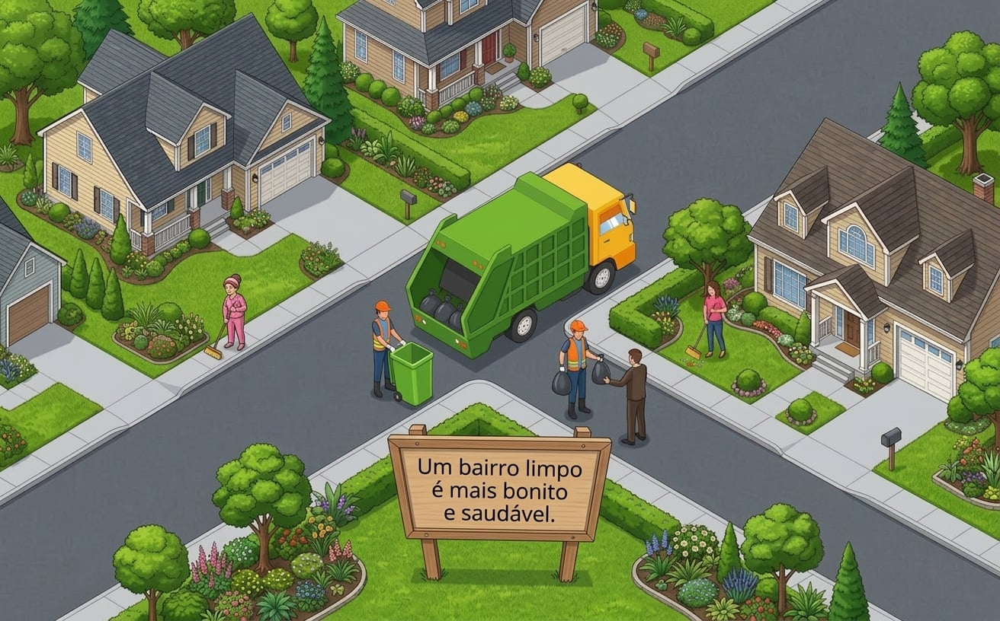

Pequenas atitudes. Um bairro melhor.
Nossa ONG reúne pessoas que querem diminuir o lixo nas ruas e cuidar do bairro onde vivem. Acreditamos que pequenas atitudes podem deixar nossa comunidade mais limpa e agradável para todos.

Juntos pela comunidade
Cuidar do bairro é uma tarefa que podemos compartilhar. Conheça as ações da ONG Bairro Limpo e veja como ajudar.
Nosso trabalho busca diminuir o lixo nas ruas e incentivar os moradores a cuidar dos espaços que todos utilizam. Para isso, organizamos duas ações:
Organizamos mutirões de limpeza e orientamos os moradores sobre o descarte correto do lixo. Nosso objetivo é recolher os resíduos das ruas, encaminhá-los para o destino adequado e evitar novos descartes nesses locais. Também recebemos voluntários que desejam participar das nossas ações.
Conheça nossos projetos e saiba como participarQuer participar de uma ação de limpeza ou conhecer melhor nosso trabalho? Entre em contato com a nossa equipe.
E-mail: bairrolimpo@example.org
Telefone: (11) 00000-0000
Outra forma de ajudar
As contribuições financeiras ajudam na compra de luvas, sacos de lixo e outros materiais utilizados nos mutirões de limpeza.
Quem deseja contribuir pode entrar em contato com a nossa equipe para conhecer a campanha de arrecadação e receber orientações sobre como doar.
E-mail: bairrolimpo@example.org
Cuidar também é participar
Cuidar do bairro é uma tarefa que podemos compartilhar. Conheça as ações da ONG Bairro Limpo e veja como ajudar.
Como ajudar? Conheça as ações abaixo e veja os dados solicitados na página de cadastro.
Nosso trabalho busca diminuir o lixo nas ruas e incentivar os moradores a cuidar dos espaços que todos utilizam. Para isso, organizamos duas ações:
Outra forma de ajudar
As contribuições financeiras ajudam na compra de luvas, sacos de lixo e outros materiais utilizados nos mutirões de limpeza.
Quem deseja contribuir pode entrar em contato com a nossa equipe para conhecer a campanha de arrecadação e receber orientações sobre como doar.
E-mail: bairrolimpo@example.org
Vamos cuidar do bairro juntos
Preencha os campos abaixo para experimentar o cadastro. Todos os campos são obrigatórios.